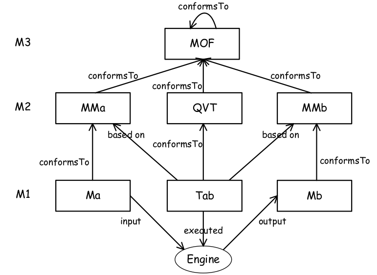
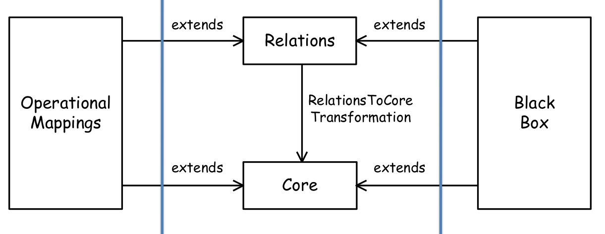
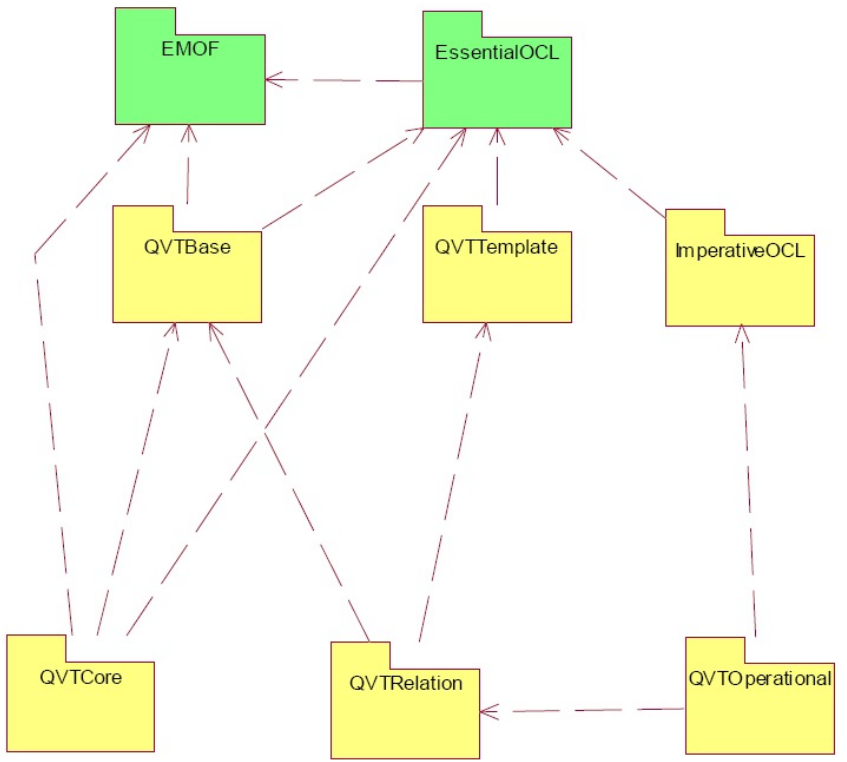

SOSE - QVT Part 1
Indice
QVT
Il termine QVT sta per Query/Views/Transformations ed è uno standard dell'OMG che definisce un linguaggio utile per esprimere appunto query, views e trasformazioni su modelli basati su Meta Object Facilities (o MOF).
La sintassi del linguaggio QVT è conforme al metamodello MOF 2.0.
Supponiamo di voler transformare un modello Ma in un al modello Mb, i quali sono rispettivamenti conformi ai metamodelli basati su MOF MMa ed MMb.
Una trasformazione scritta in QVT dovrà quindi basarsi basarsi su entrambi i metamodelli sorgente (MMa) e target (MMb).
Tale trasformazione verrà quindi eseguita da un engine che, preso in input il modello Ma conforme a MMa, restituirà come output un modello Mb conforme al metamodello MMb.

Alcune caratteristiche elencate nella proposta di QVT sono:
- Caratteristiche Obbligatorie
- Query Language: deve essere un linguaggio che consente di interrogare i modelli.
- Transformation language: deve essere un linguaggio che consente di definire delle trasformazioni tra modelli.
- Abstract syntax: la sintassi del linguaggio deve poter essere descritta tramite il metamodello
MOF 2.0. - Paradigm: il linguaggio di definizione di trasformazioni deve essere dichiarativo.
- Input & Output: ogni meccanismo proposto deve poter essere applicato su modelli conformi al metamodello
MOF 2.0.
- Caratteristiche Opzionali
- Directionality: deve poter supportare trasformazioni che possono essere invertibili, ovvero applicabili in entrambi i versi.
- Traceability: deve poter supportare la tracciabilità tra il modello sorgente e quello target.
- Reusability: deve poter supportare meccanismi per il riuso di trasformazioni.
- Model update: deve poter supportare l'esecuzione di trasformazioni che aggiornano un modello già esistente.
L'architettura del linguaggio QVT è suddivisa in tre componenti
- QVT Relations
- è un linguaggio dichiarativo progettato per consentire la scrittura di trasformazioni di modelli sia unidirezionali che bidirezionali.
Una trasformazione invertibile (o binirezionale) rappresenta una relazione d'equivalenza tra un sottoinsieme di modelli.
La coerenza può essere verificata eseguendo la trasformazione in modalità checkonly; la trasformazione restituisce quindi
Truese l'insieme di modelli è coerente secondo la trasformazione eFalsein caso contrario. La sintassi (dichiarativa) del linguaggioQVT-Relationspuò essere sia testuale che visuale. - QVT Core
- Il linguaggio QVT-Core è ancora un linguaggio dichiarativo di trasformazione come QVT-Relations, con la differenza che esso presenta un insieme di primitive e operazioni più ristretto e più semplice. Nonostante il linugaggio è più semplice e verboso esso non risulta essere meno espressivo del QVT-Relations. Infatti esiste una trasformazione (o mappatura) dal linguaggio QVT-Relations al QVT-Core.
- QVT Operational Mapping
- è un linguaggio imperativo progettato per scrivere trasformazioni unidirezionali tra metamodelli conformi a
MOF 2.0Esso estende ilQVT-Relationslanguage grazie all'utilizzo di costrutti imperativi. Perciò le trasformazioni sono scritte con i soliti costrutti della programmazion impertaiva:cicli,controllo del flusso, … Fornisce inoltre l'utilizzo di estensioniOCL1.
Perciò possiamo vedere QVT come un insieme tre linguaggi di trasformazione.

Figura 2: Architettura QVT.
Infine, QVT-BlackBox è un meccanismo per invocare strutture di trasformazione espresse in qualsiasi altri linguaggi.
Più precisamente consente l'uso di librerie specifiche del dominio interessato.
Ad esempio matematica, ingegneria, bioscienza e molti altri domini hanno grandi librerie che codificano algoritmi specifici del dominio che è difficile, se non impossibile, esprimere usando solo OCL.

Figura 3: Metamodello QVT.
Note a piè di pagina:
Object Constraint Language